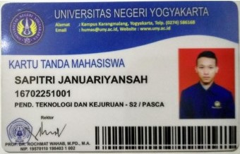
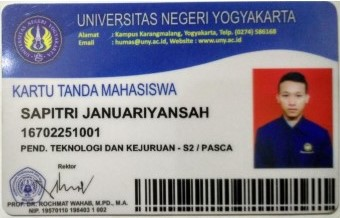

| BIODATA |
KETERANGAN |
| RIWAYAT PENDIDIKAN |
| FORMAL |
| 1997-2004 | SD Negeri 17 Kota Jambi |
| 2004-2007 | MTs Sabilul Hasanah, Banyuasin - SumSel |
| 2007-2010 | MA Sabilul Hasanah, Banyuasin - SumSel |
| 2011-2015 | PTM-S1 Universitas Negeri Yogyakarta, Sleman - DIY |
| 2016-Sekarang | PTK-S2 Universitas Negeri Yogyakarta, Sleman - DIY |
| NON FORMAL |
| 1. NTC English Course |
| 2. Welding Training |
| KEMAMPUAN |
| Akademik | Teknik Mesin, Teknik Informasi, Penelitian dan Pendidikan, Organization dan Managerial |
| Bahasa | Lancar - Bahasa Indonesia | Medium - Bahasa Inggris | Medium - Bahasa Arab |
| Soft Skills |
- Publicspeaking
- Leadership
- Teamwork
- Managerial
|
| PENGALAMAN ORGANISASI |
2016 - Sekarang: Keluarga Mahasiswa Pascasarjana (KMP) UNY |
| Posisi |
- Ketua Umum Organisasi Santri Sabilul Hasanh (2010)
- Staff IPTEK HIMA Mesin FT UNY ( 2011-2012 )
- Kabiro Jaringan KMP UNY ( 2016-Sekarang )
|
| PENGALAMAN KERJA |
| MARET 2016 - AGUSTUS 2016 : Bekerja di PTE.LTD SALESTOCK INDONESIA |
| Posisi |
- Drafter in CV Tunas Karya Yogyakarta( 2013)
- Teacher in SMK N 2 Yogyakarta( 2014)
- Staff Order Processing, Pte.LTD Salestock Indonesia (2016)
|
KTM |    |